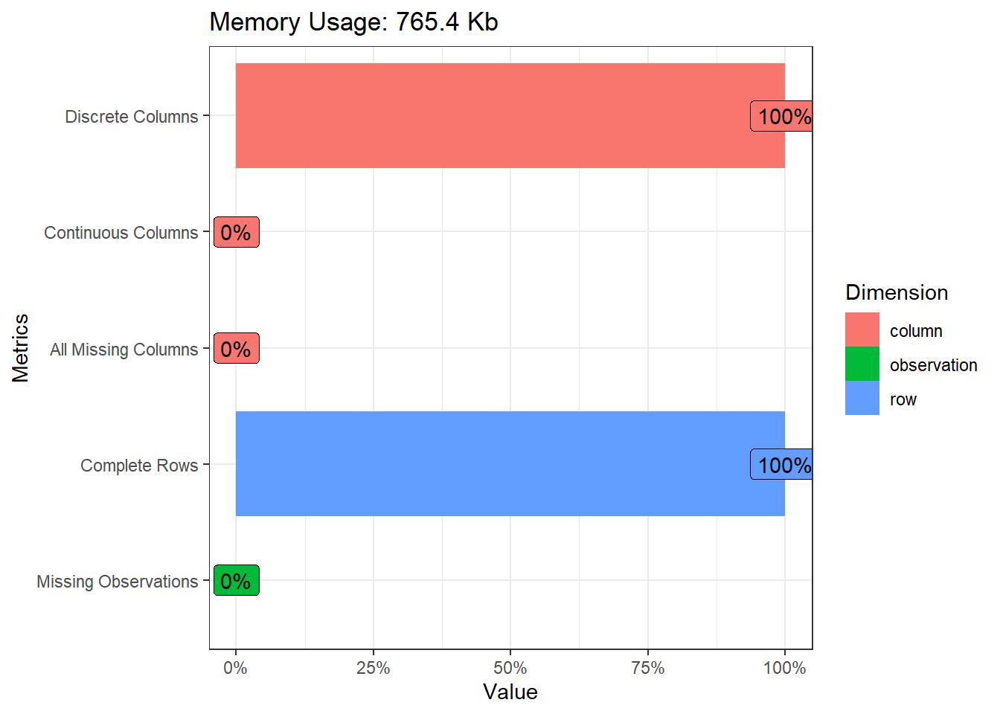
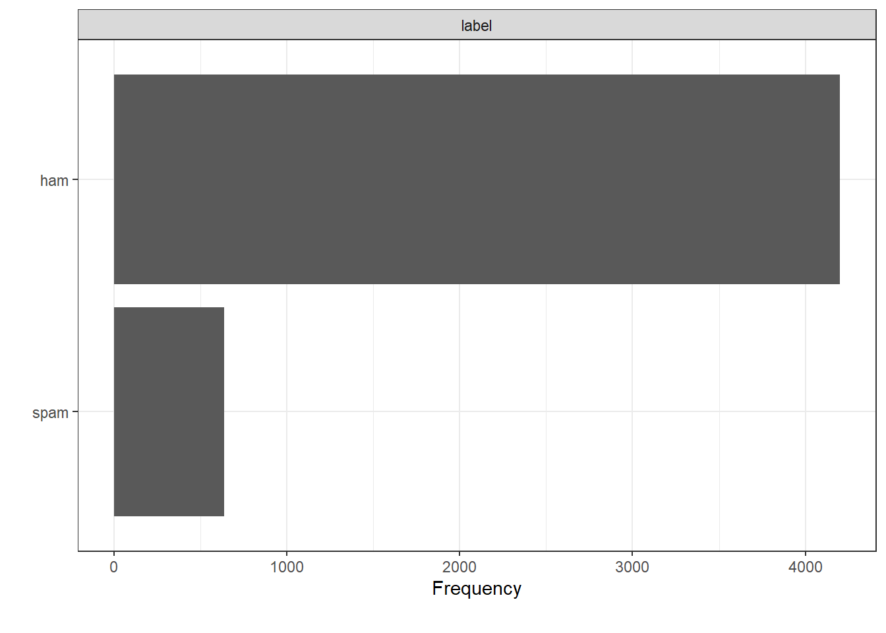

This project looks at utilizing Naive Bayes algorithm to create a spam filter. Th algorithm will be trained, tested and validated on a dataset of 5,574 SMS messages that have already been classified. The dataset was compiled by by Tiago A. Almeida and José María Gómez Hidalgo, and it can be downloaded from the The UCI Machine Learning Repository
The DataExloper package is a powerful R package that allows quick and simplified data exploration. helps identify types of data, any missing values etc.
glimpse(spam)## Rows: 4,837
## Columns: 2
## $ label <chr> "ham", "ham", "spam", "ham", "ham", "spam", "ham", "ham", "sp...
## $ sms <chr> "Go until jurong point, crazy.. Available only in bugis n gre...#Utilizing the data explorer package
plot_intro(spam, ggtheme = theme_bw())
plot_bar(spam, ggtheme = theme_bw())## 1 columns ignored with more than 50 categories.
## sms: 4512 categories
summary<-spam%>%
group_by(label)%>%
summarize(freq=n())%>%
mutate(per=freq/nrow(spam))Just over 86% (4,199) of the SMS are non-spam while the rest are spam messages. There are no missing values making the next data analysis steps easier.
Our spam filter will utilize a machine learning process to maximize the predictive ability of the algorithm. For a succesful machine learning process, we need to split our data into 3 parts: 1. Training set: which is used to “train” the computer how to classify messages. 2. Cross-validation set: which is used to assess how different choices of alpha will affect the prediction accuracy. 3. Test set: which is used to test how good the spam filter is with classifying new messages.
A rule of thumb is usually 80-10-10 split. This ensures as much training data for the algorithm to learn as possible. A good training set will help develop all of the conditional probabilities and vocabulary.
set.seed(1)
# Calculate some helper values to split the dataset
n <- nrow(spam)
n_training <- 0.8 * n
n_cv <- 0.1 * n
n_test <- 0.1 * n
# Create the random indices for training set
train_indices <- sample(1:n, size = n_training, replace = FALSE)
# Get indices not used by the training set
remaining_indices <- setdiff(1:n, train_indices)
# Remaining indices are already randomized, just allocate correctly
cv_indices <- remaining_indices[1:(length(remaining_indices)/2)]
test_indices <- remaining_indices[((length(remaining_indices)/2) + 1):length(remaining_indices)]
# Use the indices to create each of the datasets
spam_train <- spam[train_indices,]
spam_cv <- spam[cv_indices,]
spam_test <- spam[test_indices,]
# Sanity check: are the ratios of ham to spam relatively constant?
print(mean(spam_train$label == "ham"))## [1] 0.8658568print(mean(spam_cv$label == "ham"))## [1] 0.8719008print(mean(spam_test$label == "ham"))## [1] 0.8822314The means of each dataset shows that the number of non-spam messages in the training, cross-validation and testing datasets are relatively close to each other. The next step is to use the training set to teach the algorithm to classify new messages
#Lower case all the messages, remove punctuation and unicode
tidy_train <- spam_train %>%
mutate(sms = str_to_lower(sms) %>%
str_squish %>% #remove whitespace
str_replace_all("[[:punct:]]", "") %>%
str_replace_all("[\u0094\u0092\u0096\n\t]", "") %>% #Unicode characters
str_replace_all("[[:digit:]]", ""))
# Creating the vocabulary
vocabulary <- NULL
messages <- tidy_train %>%
pull(sms)
# Iterate through the messages and add to the vocabulary
for (m in messages) {
words <- str_split(m, " ")[[1]]
vocabulary <- c(vocabulary, words)
}
# Remove duplicates from the vocabulary
vocabulary <- vocabulary %>%
unique()After building the vocabulary, we then go to isolate spam texts from non spam text from the training data and then idolating the vocabularies found in each set of texts.
# Isolate the spam and ham messages
spam_messages <- tidy_train %>%
filter(label == "spam") %>%
pull(sms)
ham_messages <- tidy_train %>%
filter(label == "ham") %>%
pull(sms)
# Isolate the vocabulary in spam and ham messages
spam_vocab <- NULL
for (sm in spam_messages) {
words <- str_split(sm, " ")[[1]]
spam_vocab <- c(spam_vocab, words)
}
spam_vocab <- spam_vocab %>% unique
ham_vocab <- NULL
for (hm in ham_messages) {
words <- str_split(hm, " ")[[1]]
ham_vocab <- c(ham_vocab, words)
}
ham_vocab <- ham_vocab %>% unique()
# Length of the vocabulary sets
n_spam <- spam_vocab %>% length()
n_ham <- ham_vocab %>% length()
n_vocabulary <- vocabulary %>% length()# Marginal probability of a training message being spam or ham
p_spam <- mean(tidy_train$label == "spam")
p_ham <- mean(tidy_train$label == "ham")
# Break up the spam and ham counting into their own tibbles
spam_counts <- tibble(
word = spam_vocab
) %>%
mutate(
# Calculate the number of times a word appears in spam
spam_count = map_int(word, function(w) {
# Count how many times each word appears in all spam messsages, then sum
map_int(spam_messages, function(sm) {
(str_split(sm, " ")[[1]] == w) %>% sum # for a single message
}) %>%
sum # then summing over all messages
})
)
# Non-spam
ham_counts <- tibble(
word = ham_vocab
) %>%
mutate(
# Calculate the number of times a word appears in ham
ham_count = map_int(word, function(w) {
# Count how many times each word appears in all ham messsages, then sum
map_int(ham_messages, function(hm) {
(str_split(hm, " ")[[1]] == w) %>% sum
}) %>%
sum
})
)
# Join tibbles
word_counts <- full_join(spam_counts, ham_counts, by = "word") %>%
mutate(spam_count = ifelse(is.na(spam_count), 0, spam_count),
ham_count = ifelse(is.na(ham_count), 0, ham_count))As we have our spam and non-spam probabilities trained on the training data and vocabulary, we can go ahead and classify new messages.
# Create a function that makes it easy to classify a tibble of messages
# we add an alpha argument to make it easy to recalculate probabilities based on this alpha (default to 1)
classify <- function(message, alpha = 1) {
# Splitting and cleaning the new message (same cleaning procedure used on the training messages)
clean_message <- str_to_lower(message) %>%
str_squish %>%
str_replace_all("[[:punct:]]", "") %>%
str_replace_all("[\u0094\u0092\u0096\n\t]", "") %>% # Unicode characters
str_replace_all("[[:digit:]]", "")
words <- str_split(clean_message, " ")[[1]]
# Find the words that new (non-existent in the training vocabulary)
new_words <- setdiff(vocabulary, words)
# Add them to the word_counts
new_word_probs <- tibble(
word = new_words,
spam_prob = 1,
ham_prob = 1
)
# Filter down the probabilities to the words present
present_probs <- word_counts %>%
filter(word %in% words) %>%
mutate(spam_prob = (spam_count + alpha) / (n_spam + alpha * n_vocabulary),
ham_prob = (ham_count + alpha) / (n_ham + alpha * n_vocabulary)) %>%
bind_rows(new_word_probs) %>%
pivot_longer(
cols = c("spam_prob", "ham_prob"),
names_to = "label",
values_to = "prob") %>%
group_by(label) %>%
summarize(wi_prob = prod(prob))
# Calculate the conditional probabilities
p_spam_given_message <- p_spam * (present_probs %>% filter(label == "spam_prob") %>% pull(wi_prob))
p_ham_given_message <- p_ham * (present_probs %>% filter(label == "ham_prob") %>% pull(wi_prob))
# Classify the message based on the probability
ifelse(p_spam_given_message >= p_ham_given_message, "spam", "ham")
}
# Use the classify function to classify the messages in the training set
final_train <- tidy_train %>%
mutate(
prediction = map_chr(sms, function(m) { classify(m) })
)We can now calculate just how accurate our model is at predicting spam and non-spam messages.
# Results of classification on training
confusion <- table(final_train$label, final_train$prediction)
accuracy <- (confusion[1,1] + confusion[2,2]) / nrow(final_train)
accuracy## [1] 0.9545102The Naive Bayes Classifier achieves an accuracy of just over 90%. Pretty good! Let’s see how well it works on messages that it has never seen before.
We can attempt to modify the alpha suing the cross-validation dataset to improve the prediction power of our algorithm.
alpha_grid <- seq(0.05, 1, by = 0.05)
cv_accuracy <- NULL
for (alpha in alpha_grid) {
# Recalculate probabilities based on new alpha
cv_probs <- word_counts %>%
mutate(
# Calculate the probabilities from the counts based on new alpha
spam_prob = (spam_count + alpha / (n_spam + alpha * n_vocabulary)),
ham_prob = (ham_count + alpha) / (n_ham + alpha * n_vocabulary)
)
# Predict the classification of each message in cross validation
cv <- spam_cv %>%
mutate(
prediction = map_chr(sms, function(m) { classify(m, alpha = alpha) })
)
# Assess the accuracy of the classifier on cross-validation set
confusion <- table(cv$label, cv$prediction)
acc <- (confusion[1,1] + confusion[2,2]) / nrow(cv)
cv_accuracy <- c(cv_accuracy, acc)
}
# Check out what the best alpha value is
tibble(
alpha = alpha_grid,
accuracy = cv_accuracy
)## # A tibble: 20 x 2
## alpha accuracy
## <dbl> <dbl>
## 1 0.05 0.971
## 2 0.1 0.971
## 3 0.15 0.971
## 4 0.2 0.971
## 5 0.25 0.967
## 6 0.3 0.965
## 7 0.35 0.963
## 8 0.4 0.961
## 9 0.45 0.961
## 10 0.5 0.961
## 11 0.55 0.959
## 12 0.6 0.955
## 13 0.65 0.955
## 14 0.7 0.955
## 15 0.75 0.952
## 16 0.8 0.952
## 17 0.85 0.948
## 18 0.9 0.948
## 19 0.95 0.946
## 20 1 0.944Judging from the cross-validation set, higher \(\alpha\) values cause the accuracy to decrease. We’ll go with \(\alpha = 0.1\) since it produces the highest cross-validation prediction accuracy.
Now we can test the performance of the improved algorithim using the test data.
# Reestablishing the proper parameters
optimal_alpha <- 0.1
# Using optimal alpha with training parameters, perform final predictions
spam_test <- spam_test %>%
mutate(
prediction = map_chr(sms, function(m) { classify(m, alpha = optimal_alpha)} )
)
confusion <- table(spam_test$label, spam_test$prediction)
test_accuracy <- (confusion[1,1] + confusion[2,2]) / nrow(spam_test)
test_accuracy## [1] 0.9793388We’ve achieved an accuracy of over 96% in the test set.